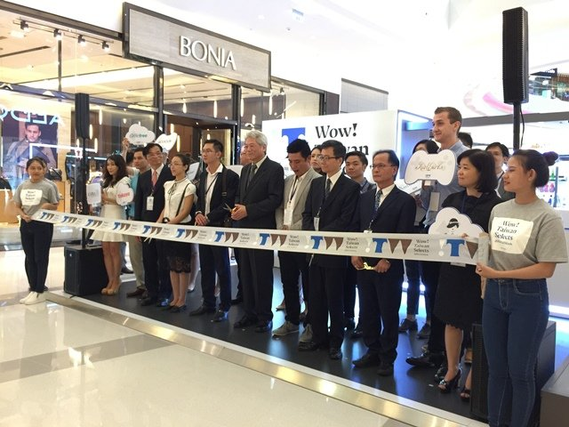
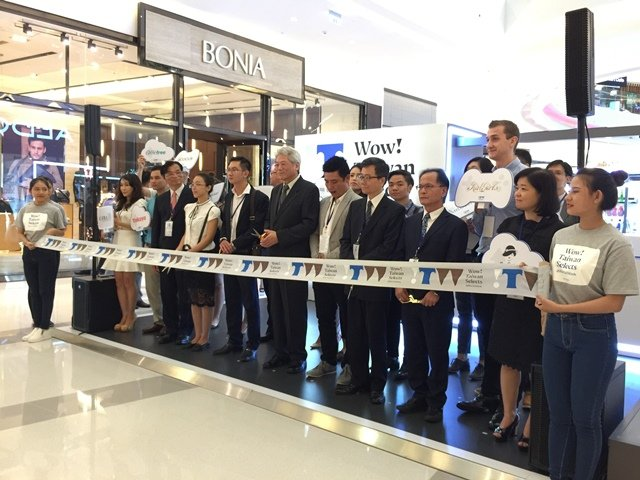

Wow! Taiwan Selects
東南亞巡迴推廣活動深度分析
前言
由經濟部國際貿易局（BOFT）委託商業發展研究院（CDRI）自2015年起辦理的「Wow! Taiwan Selects」系列活動，首站自越南胡志明市起跑，此後每年巡迴東南亞多個主要城市，成為臺灣新南向政策下行銷臺灣品牌的創新平台。
一、活動影響力與效益
「Wow! Taiwan Selects」在當地市場引發了高度關注。以2016年菲律賓馬尼拉場為例，為期7天的快閃店吸引超過2萬人次參觀體驗，並獲得《Manila Times》、Business World、《Manila Bulletin》等菲國主流媒體大幅報導，成功將臺灣全新快閃活動模式和優質商品傳達給廣大受眾。2016年印尼雅加達的「台灣夢幻樂園」主題展也藉由浪漫有趣的情境設計（如粉紅和蒂芬尼藍的色調、扭蛋機等），成功擄獲上萬名當地年輕女性消費者的目光，讓她們透過美食、美妝與時尚配件體驗到臺灣魅力。2017年「Wow! Taiwan Selects」吉隆坡快閃店，當地消費者體驗臺灣美容保養產品的魅力與創新。活動透過活潑互動的情境設計，成功吸引大批馬來西亞民眾參與。除了傳統媒體，主辦單位亦靈活運用社群行銷手法：例如2018年馬來西亞場以線上策展結合當地網紅直播帶貨，推出「Wow! Taiwan Must Buy」網路活動吸引年輕消費者成為「臺流」粉絲；同年泰國首度登場時，考量曼谷擁有近4,700萬活躍Facebook用戶，活動全面採用數位行銷與泰國網紅互動來提高話題度與品牌能見度。這種線上線下融合的創新行銷策略，大大擴散了活動聲量，累積了大量潛在消費者關注。
在活動帶來高人潮與高曝光的同時，也創造了實質商業成果。各國展會現場均安排了臺灣廠商與當地通路商/代理商的媒合洽談，將人氣轉化為商機。例如馬尼拉場吸引包括Watsons、SM集團、Rustan’s等20多家菲國大型通路到場接洽，他們對臺灣商品展現高度合作興趣。展後多家臺灣品牌持續追蹤合作機會，部分產品更因現場回饋熱烈而加速進軍當地市場。2018年起官方搭配「Wow! Taiwan Project」線上對接平台持續深耕，至2021年已累積促成超過2,000件國際採購商機配對，服務超過500家在地廠商。此一數位拓銷成果與早期實體快閃活動相輔相成，凸顯了活動帶動長尾效益：不僅短期內為參展商接觸買主、提升知名度，更長期支撐臺灣中小企業在東協市場拓展通路、創造訂單。
 

二、參展廠商的表現與成果
本系列活動迄今累計已超過100家臺灣廠商參與。參展品牌涵蓋食品飲料、美妝保養、服飾配件、居家用品、電子科技等多元領域，從知名大廠到新創中小企業皆有。例如2017年吉隆坡場匯聚了約20個臺灣精品品牌、近60項產品。現場不僅有Dr. Wu、我的美麗日記、阿原肥皂等知名保養品，還帶來HTC VIVE虛擬實境體驗、MSI電競設備等高科技展品。這種「跨產業聯合」的展示讓當地民眾一次認識臺灣各領域最佳生活風格產品，也展現了臺灣廠商的創新實力和產品力。
透過精心的市場調研與現地試水，許多臺灣參展企業在活動中找到了進軍海外的策略與合作夥伴。例如永和豆漿在專家輔導下發現菲律賓消費者偏好更高甜度與香氣的米漿，特別調整產品配方，在活動中廣受好評。TTL台灣菸酒帶去的水果啤酒系列在馬尼拉試飲引發轟動，當地民眾紛紛詢問上市時間，顯示產品切中了市場胃口。臺塑生醫等美容保健廠商也在菲國活動現場獲得信心，認為臺灣產品獨特性正好符合菲律賓年輕族群需求，預期未來合作可期。林果良品的創辦人則分享，菲國代理商對其手工品質及品牌形象讚譽有加，認為這類產品適合進駐當地高端購物中心，具有獨特賣點。已在菲國設點的台灣櫻花（廚衛品牌）藉由活動結識了更多有完備行銷與售後能力的新通路商，強化了其在當地市場的深耕佈局。上述案例顯示，「Wow! Taiwan Selects」不僅是一次展覽，更是臺灣廠商的實戰舞臺：透過與當地消費者、媒體和通路直接互動，廠商得以及時調整產品策略、驗證市場反應，並促成後續的代理經銷合作，為品牌開拓海外奠定良好基石。
三、在地市場反應與合作情形
各國民眾對「Wow! Taiwan Selects」的反應普遍熱情正面。活動主題經常結合當地流行文化與生活型態，激發共鳴。例如2016年印尼雅加達場以浪漫的「Eat, Play, Love」為主題，在市中心購物中心打造夢幻市集樂園，鎖定年輕女性族群，大打戀愛商機，現場甜蜜氛圍吸引許多情侶與女性朋友駐足體驗。展區提供珍珠奶茶試飲、扭蛋機遊戲、時尚彩妝試用等趣味活動，讓民眾一邊玩樂一邊認識臺灣產品，許多人在互動中不知不覺「愛上臺灣」。再看2016年越南胡志明市場，地點選在新興商圈的Crescent Mall，擺滿LED自動換色燈、掃地機器人、按摩椅等智慧居家設備，以及Kingirls、冠均生技等女性保養品，迎合了越南小家庭注重生活品質的趨勢。活動期間（8月31日至9月4日）更特別安排台灣電子樂團「The Girl and The Robot」連續兩天現場表演流行音樂，吸引年輕族群圍觀互動，現場氣氛十分熱烈。這種將產品體驗融入娛樂潮流的手法，大大提升了在地消費者的參與度與記憶點。
除了一般消費者，活動對當地專業採購商與代理通路同樣具有吸引力。每站活動前，主辦單位皆主動邀約當地重量級通路商參與。例如馬來西亞與泰國場次就舉辦了新媒體VIP酒會/交流會，邀請當地大型經銷商與臺灣品牌負責人面對面交流。在馬尼拉，由於BOFT精準鎖定美妝、食品、百貨等領域，現場來自Watsons、SM、Rustan’s等龍頭企業的採購代表，不僅參觀展區還與臺灣業者洽談合作細節，對引進臺灣商品表現出高度意願。雅加達與胡志明市的活動同樣有臺灣駐外單位（例如駐印尼代表處）協助串連在地媒體與業界人士，共同出席開幕並背書推薦。許多代理商透過活動首次全面體驗臺灣商品的品質與潛力，例如印尼副代表蔡允中就表示，希望藉此讓更多印尼媒體、代理商、通路商認識臺灣商品，親自體驗臺灣產品優良的品質和服務。後續不少廠商與當地代理持續保持聯繫洽談，有些產品已逐步進入當地賣場上架（如菲國活動後，臺灣特色零食和保養品陸續出現在當地進口專區）。各站活動成功搭起了臺灣供應商與東協買主之間的橋樑，從現場互動到會後追蹤，逐步深化雙方合作關係，也為臺灣商品在當地建立了良好的口碑與市場基礎。
四、政府角色與政策支持
「Wow! Taiwan Selects」明確定位為政府推動的新南向經貿交流項目之一。經濟部國際貿易局自2015年起擔任幕後推手，委由商研院執行這一創新海外行銷計畫。2016年蔡英文政府上任後將新南向政策列為重點，該活動更獲得延續擴大。貿易局主動結合新南向政策目標，鎖定東協新興市場消費商機。2015年此計畫實施時正值「優質平價新興市場拓銷計畫」最後一年，政府多年累積的新興市場研究成果也融入了活動策劃。這表示政府不僅提供資金，更提供了市場數據、人脈網絡等軟實力支援，提升活動的專業度和精準性。
活動的成功離不開政府多部門的協調配合與駐外單位的支持。例如各國開幕時我駐外代表處官員（如駐泰代表童振源、駐馬大使章計平）親臨站台，致詞強調臺馬、臺泰經貿合作緊密及新南向政策與當地發展戰略相契合。章計平大使在2018年馬來西亞活動致詞中特別指出，「Wow! Taiwan Selects自2015年起已巡迴多個東協國家，每年以不同主題帶來多樣的MIT優質商品給大家」，並強調今年已是第二次來馬來西亞，展現政府持續深耕的決心。此外，貿易局與商研院積極運用數位工具強化政策效果：2018年起打造D2B線上平台，提供買主資料庫、線上洽談等服務，讓實體活動與線上後續對接相結合，提升長期成效。政府還鼓勵參展廠商利用臺灣精品、Taiwan Excellence、臺灣形象展等既有國家品牌資源，與Wow! Taiwan Selects形成宣傳綜效。整體而言，政府在此計畫中扮演了策劃者、推動者與後盾的角色：從政策面給予明確方向，從資源面提供經費與資訊，從執行面透過駐外單位和相關機構協力，確保活動每站都能順利舉辦並達成預期目標。此一模式充分體現了新南向政策下官民合作、整合資源開拓海外市場的成功經驗。
參考資料
- Nownews今日新聞：「『菲』常吸睛 2016臺灣形象店閃亮馬尼拉」，2016年6月
- 中華民國經濟部國際貿易局新聞稿：「Wow! Taiwan Selects臺灣夢幻樂園大打戀愛商機 創造幸福氛圍 擄獲上萬印尼女人心」，2016年8月
- 財團法人商業發展研究院新聞發布：「大馬網紅直播創造臺流粉絲 搶百億美妝保養商機」，2018年5月22日
- The BigChilli (Thailand)：“Launched new campaign ‘Wow! Taiwan Selects’ – export innovation from Taiwan to Thai market”, 2018年8月31日
- Nownews今日新聞：「『菲』常吸睛 2016臺灣形象店閃亮馬尼拉」，2016年6月
- Sunshine Kelly部落格：“WOW! Taiwan Selects @ Kuala Lumpur 2017 – Experience Taiwan’s best lifestyle brands in Malaysia”, 2017年8月
- 中央社：「台夢幻市集印尼登場 美食美妝拼商機」，記者周永捷，雅加達，2016年7月28日
- Nownews今日新聞：「『菲』常吸睛 2016臺灣形象店閃亮馬尼拉」，2016年6月
- 中央社：「台夢幻市集印尼登場 美食美妝拼商機」，2016年7月28日
- Pháp Luật Online越南（胡志明市法律日報）：「Có gì 'hot' tại sự kiện Wow! Taiwan Selects?」（2016年Wow! Taiwan Selects活動有哪些亮點？），2016年9月2日
- The BigChilli (Thailand)：“Launched new campaign ‘Wow! Taiwan Selects’ – export innovation from Taiwan to Thai market”, 2018年8月31日
- Nownews今日新聞：「『菲』常吸睛 2016臺灣形象店閃亮馬尼拉」，2016年6月
- The BigChilli (Thailand)：“Launched new campaign ‘Wow! Taiwan Selects’ – export innovation from Taiwan to Thai market”, 2018年8月31日
- 財團法人商業發展研究院新聞發布：「大馬網紅直播創造臺流粉絲 搶百億美妝保養商機」，2018年5月22日
- CDRI官網英文新聞稿： “MIT Products to the newly emerged market ‘Pop-Up Store’ landed at Indonesia and Vietnam”, 2015年6月15日
- Wow! Taiwan Project 官方網站： “Who We Are – Wow! Taiwan Project (Milestone)”, CDRI, 2023年 (說明2018年後數位平台商機媒合成果)